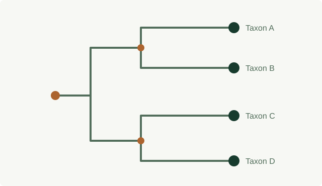
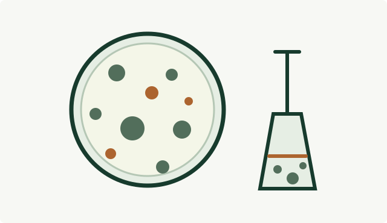
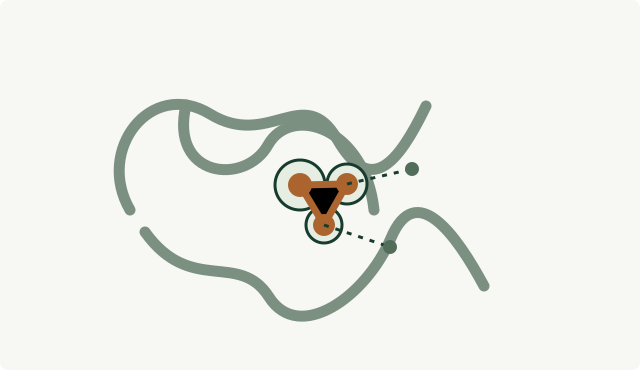

Mohammed Sajjad
Hossain Bappi
PhD Student · School of Earth Sciences · The Ohio State University
I am a PhD student in Earth Sciences at The Ohio State University, with a background in Biochemistry and Molecular Biology from the University of Chittagong, Bangladesh. My research interests span microbial ecology, evolution, genomics, and their connections to environmental and applied microbiology. I am interested in using both experimental and computational approaches to investigate microbial diversity, adaptation, and their roles in biological and environmental processes.

Research in focus
Selected directions from my current computational work and previous experimental research.

Microbial phylogenetics and evolution
Exploring evolutionary relationships among microorganisms through sequence-based computational analysis, from sequence preparation and alignment to phylogenetic inference and interpretation.
Explore current research →
Environmental and applied microbiology
Experimental research experience with bacterial isolation and characterization, biosurfactant-producing bacteria, and plant growth-promoting rhizobacteria.
Explore experimental methods →
Molecular docking and computational analysis
Computational approaches to investigating molecular interactions, including work involving prodigiosin and molecular docking.
Explore the workflow →Research interests
Microbial ecology and evolution · Microbial diversity and genomics · Environmental microbiology and biogeochemical cycling · Microbial adaptation and stress responses · Environmental contaminants and bioremediation · Gut microbiota
Selected work and publications
Explore my published research and scholarly contributions.
View publications →Photography & writing
Beyond research, I enjoy photography and writing as ways to explore places, people, and everyday experiences. Both give me opportunities to observe the world from different perspectives. Science and art have something in common: both begin with paying attention.
Photography → Writing →